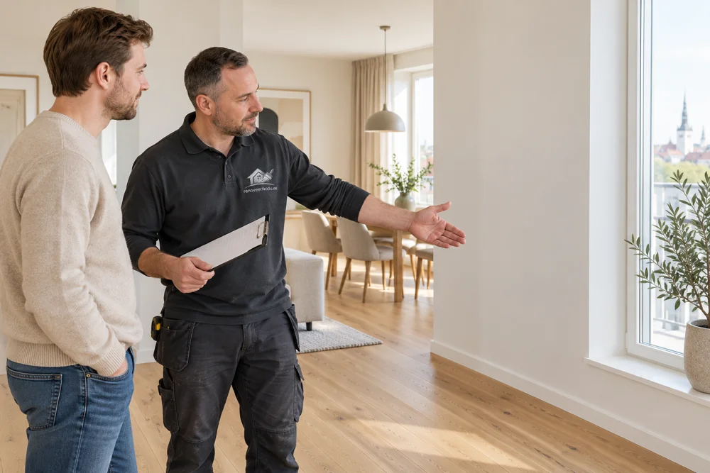
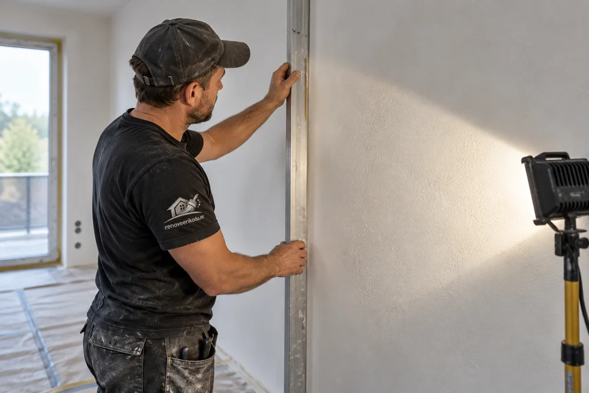
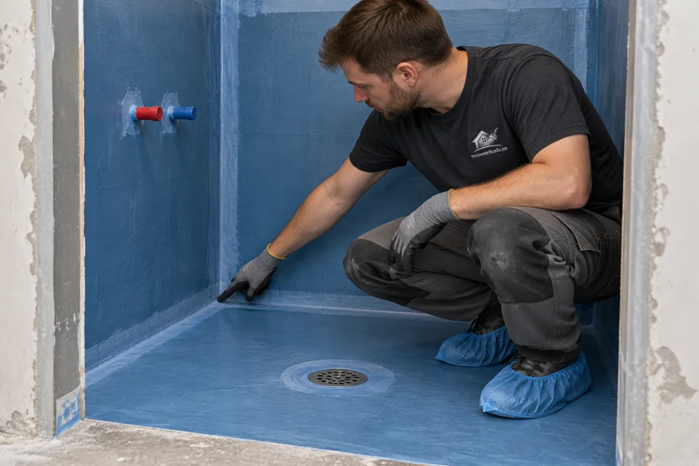
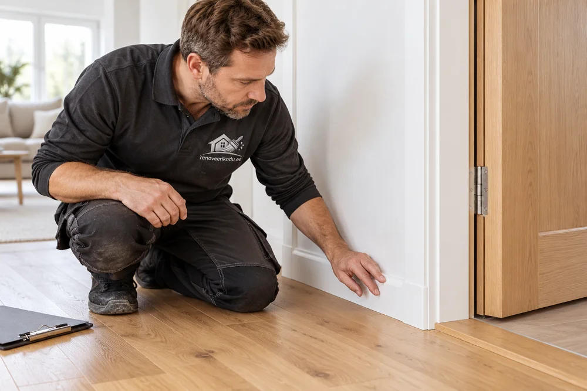
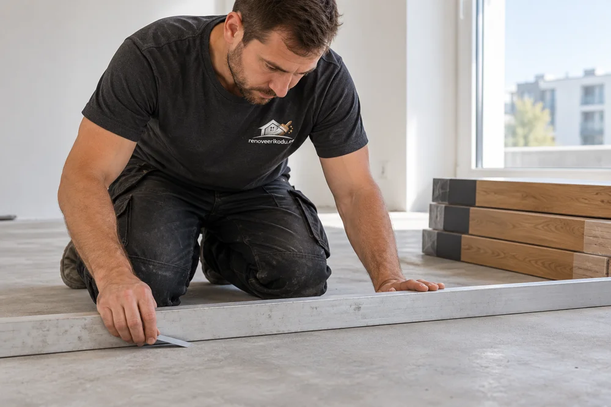

Ehitus- ja viimistlustööde kvaliteedikontroll
Kontrollitud aluspind, läbimõeldud tööetapid ja selge üleandmine.

Mida tähendab kvaliteetne töö?
Hea viimistlus on ühtlane, detailid sobivad kokku ja lahendus toimib igapäevases kasutuses. Selle taga on tugev ning sobivalt ette valmistatud alus, omavahel sobivad materjalid ja õige tööjärjekord. RK Meistrid OÜ tööde puhul kontrollime neid tingimusi enne alustamist, töö käigus ning üleandmisel.
Leht kirjeldab meie tehtavate ehitus- ja viimistlustööde kontrollimise põhimõtteid. Konkreetse objekti kvaliteedinõuded, kontrollitavad etapid ja vajalik dokumentatsioon täpsustame töömahus. Kui projekt eeldab omanikujärelevalvet, erialast katset või ekspertiisi, kavandatakse see koos vastava pädeva spetsialistiga.
Kontroll kolmes etapis

1. Enne töö alustamist
Vaatame üle aluspinna tugevuse, tasasuse, niiskuse ja varasemad kahjustused. Täpsustame valitud materjali nõuded, valmis kõrgused, liitekohad ja nähtava pinna ootused. Pahtelduse kvaliteeditase, erivalgustus ning proovitooni vajadus lepitakse kokku enne viimistlust. Kui alus vajab parandamist, arvestame selle tööplaani.

2. Enne järgmise kihi paigaldamist
Kontrollime tööd ajal, mil oluline detail on veel nähtav: näiteks toruühendused enne seina sulgemist, armeerimine enne betoonivalu ja hüdroisolatsioon enne plaatimist. Järgime materjali nõutud kuivamist ning kaitseme valmis kihti järgmiste tööde ajal. Vajalikud fotod ja mõõtmistulemused seome ruumi või kontrollikohaga.

3. Valmis töö üleandmisel
Käime kokkulepitud töömahu kliendiga läbi. Hindame viimistluse ühtlust, servi, vuuke, liiste, liitekohti ning lahenduse kasutatavust. Vajadusel kontrollime näiteks ukse vaba liikumist või vee äravoolu. Märkused fikseeritakse koos asukoha, paranduse ja tähtajaga ning parandatud koht vaadatakse uuesti üle.
Mida eri tööde juures kontrollime?
Maalritööd ja tapeetimine
Pahteldatud pinna kuivus, lihvimine, tolmu eemaldamine ja krundi sobivus. Valmis pinnal vaatame tooni ja katvuse ühtlust, lõikejooni ning tapeedi mustri ja paanide ühendusi. Kuivamata pahtli või lahtise vana kihi peale lõppviimistlust ei planeerita.
Plaatimine ja märgruum
Aluspinna sobivus, põranda kalle ning valitud veetõkkesüsteemi nurgad, läbiviigud ja trapiühendus. Kihipaksuse kontrollime süsteemi juhendi kohase meetodiga; värvus või pilt üksi ei tõenda piisavat paksust. Plaatimisel jälgime jaotust, naket, vuuke ning liikumist võimaldavaid ühendusi.
Kipsseinad ja laed
Karkassi ja kinnituste vastavus valitud süsteemile, tugevdused rasketele esemetele, villatäide, plaadikihtide ja vuukide paigutus. Enne sulgemist kontrollitakse vajalikud kommunikatsioonid. Viimistluse kvaliteeditase valitakse pinnakatte ning ruumi kavandatud valgustuse järgi.
Parkett ja põrandakatted
Aluspinna tasasus ja niiskus valitud põrandakatte nõuete järgi, sobiv alusmaterjal või liim ning materjali kohanemine ruumi tingimustega. Paigalduse järel vaatame paisumisruumi, ühendusi, liiste ja üleminekuid. Alusvaip ei paranda automaatselt ebatasast põrandat.
Betoon ja vundament
Mõõdud, kõrgused, raketis, armeerimine, kaitsekiht ja läbiviigud kontrollitakse projekti järgi enne valu. Pärast valu jälgime kokkulepitud pinnaviimistlust ning järelhooldust. Järgmise katte paigaldus sõltub ka niiskusest; kõvenemise vanus üksi ei kinnita katmisvalmidust.
Fassaad ja katus
Aluspinna seisukord, süsteemi sobivus, kinnitused ning vee ja niiskuse teekond. Fassaadil pöörame tähelepanu avade, sokli ja plekkide liidetele; katusel aluskattele, tuulutusele ning läbiviikudele. Kontrollitav detail vaadatakse üle enne selle katmist.
Selged nõuded ja sobiv kontrollimeetod
Enne tööd lepime kokku, millist tulemust hinnatakse ja mille järgi. Lähtume projektist, töö kirjeldusest, kohaldatavatest nõuetest ning konkreetse materjali paigaldusjuhendist. Mõõtmisel märgime ka meetodi ja kontrollikoha: eri tööde tulemusi ei hinnata ühe universaalse millimeetripiiri järgi.

Tasasuse ja kõrguse kontroll
Sirglatt, lood või laser aitavad hinnata tasapinda ning kõrgusi. Mõõtebaas ja lubatud hälve määratakse kontrollitava konstruktsiooni ja järgmise pinnakatte nõuete järgi. Märgruumi põranda puhul peab tasapind järgima ettenähtud kaldeid.
Niiskuse ja kuivamise kontroll
Materjalile sobiv mõõtmine aitab otsustada, kas järgmise kihiga võib alustada. Esmane pinnamõõturiga ülevaatus ja põrandakatte juhendis nõutud niiskusmõõtmine võivad anda erinevat infot. Kasutame otsustamiseks nõutud meetodit; üks kuivana tunduv pind ei tõenda kogu kihi kuivust.
Nähtava viimistluse hindamine
Pinna välimust hindame kokkulepitud valgustuses ja vaatamistingimustes. Tööaegne külgvalgus aitab paranduskohad üles leida. Kui ruumi jääb tugev seinapesu- või LED-valgustus, tuleb see kvaliteedinõuetes varakult arvestada. Q4 on kõrgem viimistlustase, kuid ei ole lubadus, et kõikvõimalik valgus kunagi ühtki varju ei näita.
Praktilised kontrollinäited
Järgmised olukorrad näitavad, kuidas kontroll seostub töö jätkamise otsusega.
Dušinurk enne plaatimist
Kontroll: veetõkke terviklikkus, nurgad, läbiviigud, trapiühendus ja ettenähtud kuivamine.
Kui ilmneb puudus: näiteks kahjustatud koht või puudulikult tihendatud ühendus, jääb katmine ootele. Parandus tehakse süsteemi juhendi järgi ja kontrollitakse pärast nõutud kuivamist.
Miks see loeb: nähtavat veetõket saab parandada enne, kui plaadid selle varjavad. Juba kaetud lahenduse põhjuse leidmine võib nõuda viimistluse avamist.
Sein enne värvimist
Kontroll: aluspinna kvaliteeditase, kuivanud pahtli tasasus ning kavandatud valguse mõju.
Kui ilmneb puudus: lihvimisjälg, serv või lohk parandatakse enne krunti ja värvi. Vajadusel kinnitame proovipinnal tooni ja viimistluse.
Miks see loeb: külgvalgus ja läikivam kate võivad väikese ebatasasuse nähtavamaks muuta. Ootus pannakse paika enne kogu seina lõppviimistlust.
Põrand enne parketti
Kontroll: aluse tasasus, niiskus ning katte ja põrandakütte sobivus.
Kui ilmneb puudus: liigne ebatasasus parandatakse sobiva tasandusega; liiga niiske aluse puhul oodatakse ja tehakse uus mõõtmine. Lahendus ei põhine üksnes alusvaiba paksemaks vahetamisel.
Miks see loeb: stabiilne alus aitab vältida katte liikumist ja ühenduste liigset koormust. Enne paigaldust tehtud kontroll vähendab vajadust valmis põrandat hiljem avada.
Üleandmine ja puuduste parandamine
Üleandmisel vaatame tehtud töö kokkulepitud mahus koos läbi. Vajalik dokumentatsioon sõltub töö sisust: see võib hõlmata kaetavate etappide fotosid, mõõtmistulemusi, kasutatud materjalide infot, katseprotokolle ja hooldusjuhiseid. Eri spetsialistide tehtud katsete või kontrollide dokumendid seotakse vastava tööga.
- Kirjeldame märkuse täpselt. Ruumi ja asukoha märge, foto ning puuduse kirjeldus aitavad üheselt aru saada, mida parandatakse.
- Lepime kokku lahenduse ja aja. Täpsustame parandustöö ulatuse, ligipääsu ja vajaliku kuivamisaja.
- Kontrollime parandust uuesti. Vajadusel kordame mõõtmist või kasutuskontrolli ning fikseerime tulemuse.
3-aastane garantii tehtud ehitus- ja viimistlustöödele. Konkreetse töö sisu ja garantii tingimused fikseerime hinnapakkumises. Anname kliendile ka kasutus- ja hooldusinfo, näiteks millal võib pinda pesta või põrandat koormata.
Korduma kippuvad küsimused
Mida kontrollite enne töö alustamist?
Kontrollime aluspinna seisukorda ja täpsustame materjalide, tööjärjekorra ning lõpptulemuse nõuded. Vajadusel hinnatakse niiskust, tasasust ja varasemaid kahjustusi enne järgmise kihi paigaldamist.
Miks tuleb hüdroisolatsiooni kontrollida enne plaatimist?
Pärast plaatimist jäävad veetõkke nurgad, läbiviigud ja trapiühendus peitu. Enne katmist saab kontrollida süsteemi terviklikkust, ettenähtud kihipaksust ja kuivamist ning vajadusel parandada puudusi.
Kas seina kvaliteeti saab hinnata ainult külgvalgusega?
Külgvalgus aitab töö käigus ebatasasusi leida. Valmis pinna hindamine lähtub kokkulepitud kvaliteeditasemest, ruumi kavandatud valgustusest ja vaatamistingimustest. Erivalgustuse mõju tuleb enne viimistlust läbi arutada.
Kas kvaliteedikontroll asendab omanikujärelevalvet?
See leht kirjeldab RK Meistrid OÜ tehtavate tööde kontrolli. Projektist või nõuetest tulenev omanikujärelevalve, erialased katsed ja ekspertiis kavandatakse vastava pädeva spetsialistiga.
Millised dokumendid tööde üleandmisel kaasa saab?
Dokumentide maht lepitakse kokku töö sisu järgi. Vajadusel hõlmab see kaetavate tööetappide fotosid, mõõtmistulemusi, kasutatud materjalide infot, katseprotokolle ning kasutus- ja hooldusjuhiseid.
Mis saab siis, kui üleandmisel leitakse puudus?
Fikseerime puuduse asukoha ja kirjelduse, lepime kokku paranduse ning tähtaja ja kontrollime parandatud kohta uuesti. Vajadusel kordame asjakohast mõõtmist või kasutuskontrolli.
Kas tehtud töödele kehtib garantii?
RK Meistrid OÜ annab tehtud ehitus- ja viimistlustöödele 3-aastase garantii. Konkreetse töö sisu ja garantii tingimused fikseeritakse hinnapakkumises.
Materjalitootjate juhendid
Materjali nõuded aitavad kontrollida konkreetset lahendust: Knaufi pinna ettevalmistamise kvaliteeditasemed ning Kiilto märgruumi kontrollipunktid. Objektil lähtume kasutatava toote ja süsteemi kehtivast juhendist.
Lepime töö ja kvaliteedinõuded enne alustamist kokku
Saada objekti fotod, töö kirjeldus ja soovitud tulemus. Kui sul on projekt, kindel materjal või erivalgustuse plaan, lisa see päringule — nii saame kontrollitavad etapid ja töömahu täpsemalt planeerida.